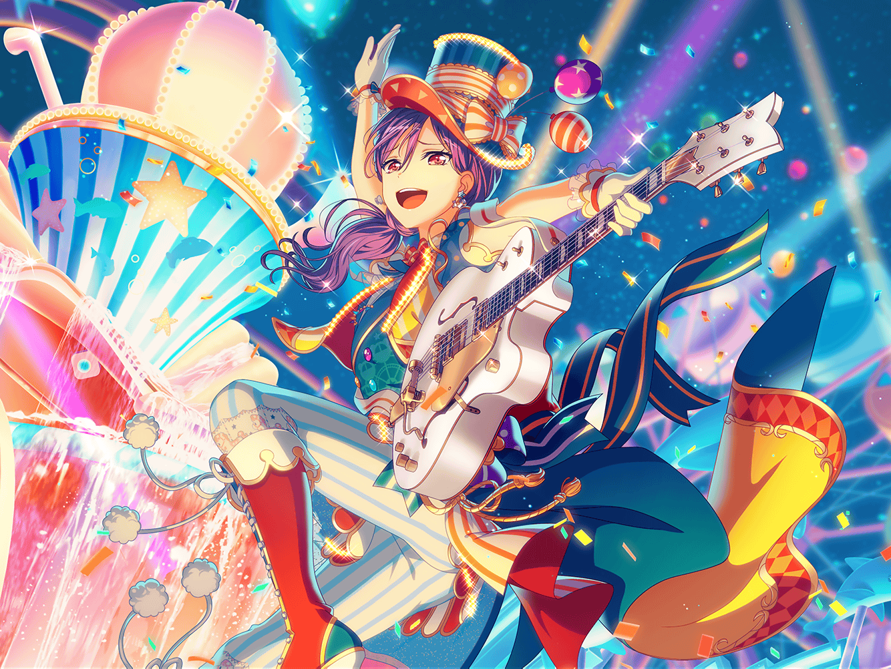

CiRCLE カフェテリア
まりな
あれ？ あそこにいるのって……
薫
おや、{{userName}}さんにまりなさんじゃないか。
今は休憩中かな？
まりな
うん、そんなところ。
薫さんは優雅な午後のひと時って感じだね。
何してたの？
薫
あぁ、実はある企画を練っていてね。
実現すれば、それは儚いことになるはずなんだ
まりな
企画……？
薫
あぁ、少し前に美咲と演技について話したのがきっかけでね。
その時の美咲の質問が、とても印象的だったんだ
まりな
へえ、どんな質問だったの？
薫
望まない役で評価されたとき、微妙な気持ちになることはないか。
確かそんな質問だったね
まりな
なるほど……
美咲ちゃんも、そういう悩みがあるんだね……
薫
役者であれば、一度は考えることのある感覚なんだ。
それを聞かれたとき、私はハッとしたよ。
まさか美咲がそんな質問をしてくるとは思わなかったからね
薫
そしてそのことについて考えていたある日、
ようやく私はある１つの可能性に行き着いたのさ
薫
それは私が今まで抱いていたあらゆる疑問を解消する、
思いもよらない可能性だった……
まりな
そ、それって……まさか……
薫
フフ、そのまさか、さ。
つまり美咲は……
まりな
……っ！
薫
とても役者に向いているんじゃないか、ということさ
まりな
……え？
薫
実は前から不思議に思っていたんだ。
前にミュージカルの曲をアレンジしてもらった時も、
美咲は、私のやりたいことを見事に表現した曲にしてくれた
薫
役者としての感性がなければ、
あれほど役者の求めに応じたアレンジはできないからね
薫
そしてちょうど今、
美咲の可能性を確かめることができる機会に恵まれていてね
まりな
もしかして、薫さんが練ってる企画と関係があること？
薫
フフ、察しがいいね。
最近知り合ったスマイル遊園地の社長さんから、
遊園地で舞台をやってみないか、とオファーをもらっているんだ
まりな
えっ、お芝居のオファーをもらうなんてすごいね！
薫
今、あの遊園地は様々な催しを企画して、
盛り上がっているところだから、その企画のひとつというわけさ
薫
そして、その舞台のヒロインとして、
美咲に出演してもらおうと思っているんだ！
薫
もちろん、主役は私だよ。
美咲と私の共演……考えただけでも儚いだろう？
まりな
あはは、美咲ちゃんが聞いたら何ていうのかな……
私としては、ちょっと見てみたい気もするけど
薫
もちろんだとも！
二人には、ぜひ観に来てほしいと思っているよ
薫
それに、当然ハロハピのメンバーもね。
こころ、はぐみ、花音、そしてミッシェル……
薫
フフ、きっと美咲の演技に驚くことだろうね